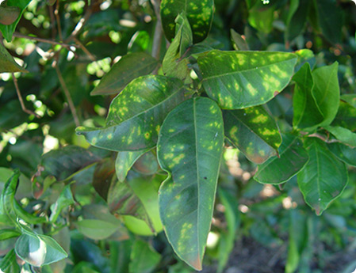
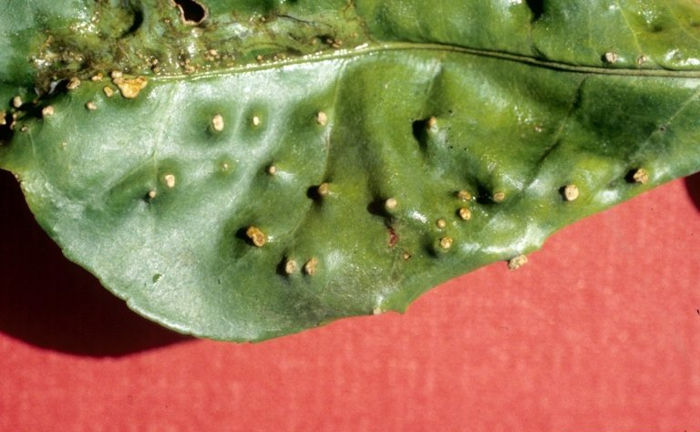

Doença: Huanglongbing
Nome científico: Candidatus Liberibacter spp
Tipo: bacteriana;
Etiologia: A doença é causada por bacterias gram negativas, que são restritas aos vasos do floema, pertencentes ao grupo das a proteobactérias. Com as técnicas de cromatografia e moleculares com oligonucleotídeos específicos, sendo utilizado somente amostras de folhas apresentando mosqueado típico, sendo assim será possivel fazer o diagnóstico com base nos sintomas
Sintomas: Evidencia durante o outono e início do inverno quando as plantas ainda apresentam frutos e a queda de folhas com sintomas não ocorreu. O sintomas inicial aparece gerralmente em um ramo ou galho, normamente setorizado na planta, o qual se destaca pela coloração amarelada das folhas. As folhas apresentam um mosqueado irregular entre os lados das folhas separadas pela nervura central, normalmente espessa e saliente.
Controle: Uso de mudas sadias mediante um rigoroso, controle das borbulheiras e da formação das mudas em viveiros telados; Eliminação de plantas doentes imediatamente após o aparecimento dos primeiros sintomas.

Doença: Clorose Variegada dos Citros.
Nome científico: Xylella fastidiosa
Tipo: bacteriana;
Etiologia: A bacteria se limita ao xilema e sua transmissão ocorre por utilização de sementes infectadas
Sintomas: Surgem pequenos pontos na parte superior da folha e evolui para um amarelecimento consequente. Já na face inferior da folha aparecem pontos de cor marrom-claro que escurecem e podem necrosar.
Controle: Utilização de mudas sadias para o plantio, controle químico dos vetores da bacteria e averiguar os pomares para evitar focos da patologia.
Temperatura: Altas temperaturas.

Doença: Verrugose.
Nome científico: Elsinoe fawcetti(Sphaceloma fawcetti), Elsinoe australis(Sphaceloma australis)
Tipo: Fungica.
Sintomas: São doenças de órgãos em desenvolvimento. Em folhas e ramos novos, a doença manifesta-se no ínicio como pequenas manchas deprimidas de aspecto encharcado. Com a hiperplasia do tecido na área afetada, as lesões tornam-se salientes, corticosas, irregulares, cor de mel ou canela, espalhadas por ambas as faces da folha ou pela superfície dos ramos.
Controle: Controle convencional da verrugose é feito por meio de pulverizações com fungicidas, visando a proteção dos tecidos jovens suscetíveis. Lembrando que a eficácia dos tratamentos depende não só do fungicida utilizando e sua dose, mas também da época e número de aplicações feitas.

Doença: Leprose.
Nome científico: Citrus leprosis virus - CiLV
Tipo: Virótica
Etiologia: Os vírus são encontrados nas células do parênquima e da epiderme. O tipo mais frequente é o citoplasmático localizado no retículo endoplasmático. O vírus praticamente não se movimenta na planta, com isso não ocorre a propagação do vírus, diante da ausência de um determinado vetor
Sintomas: Apresentam lesões em diferentes áreas da planta. Nas folhas, se formam lesões arredondadas que se transformam em manchas de cor verde-pálida a marrom e em casos extremos, pode chegar a ocorrer queda das folhas. Nos ramos surgem manchas de coloração marrom-avermelhada. E no fruto, as lesões são inicialmente amareladas e se tornam escuras.
Controle: Aplicar métodos para redução da quantidade de vetores na região da plantação como utilização de mudas sadias, remoção de frutos infectados que apresentam sintomas e pulverizaçao com acaricidas..
Doença: Sorose e doenças semelhantes à sorose.
Tipo: Virotica
Etiologia: O vírus pertence ao gênero Ophiovirus. Sorose A e B são associadas com diferentes estirpes do Citrus psorosis virus (CPsV), as estirpes mais fracas são denominadas CPsV-A, causam a sorose A, as mais severas são denominadas CPsV-B, causam a sorose B
Sintomas: Sorose A - Começa com pequenas pústulas que irrompem e coalescem, causando o fedilhamento da casca de áreas mais ou menos circulares. A camada externa da casca destaca-se, retorcendo-se nas extremidades e produzindo descamação abundante em grandes áreas, que podem circundar o tronco e os galhos.
Sorose B - Lesões da casca expandem-se rapidamente, ocorrendo desprendimento de grandes pedaços.
Gomose côncava - Produz no tronco e nos ramos grandes cavidades no sentido longitudial, que são cobertas pela casca normal, mas que também podem gerar rachaduras, por onde sai um fluxo de goma. O tecido a baixa da casca encontra-se impregnado de goma, ficando com uma coloração vermelha ou amarela marrom.
Marcas de dedos - Causa a malformação de galhos que parecem com marcas deixadas em amterial mole quando pressionado com os dedos
Controle: Controle de sorose A e B é baseado em programas de certificação de plantas matrizes isentas de vírus, atualmente a melhor técnica para eliminar a sorose de material de propagação é uma combinação de termoterapia e microenxertia de ápices caulinares.
Doença: Tristeza.
Nome científico: Citrus tristeza virus - CTV
Tipo: Virotica
Etiologia: O CTV pertence a o gênero Closterovirus, da família Closteroviridae. Os sintomas variam que induzem nas hospedeiras e na sequência de nucleotídeos do gene da proteína capsidial. Geralmente pode haver mais de estirpe do CTV na mesma planta. O CTV é limitado ao floema po ser transmitido facilmente por enxertia e, experimentalmente pela Cuscuta e por ferimentos no floema. É transmitido de forma semi-persistente por diferentes espécies de afídeos
Sintomas: A manifestação da tristeza depende da virulência da estirpe do CTV, de condições ambientais e, principalmente, de fatores inerentes à propria planta, como idade, capacidade de permitir a multiplicação do vírus e tolerãncia dos tecidos à degeneração, principalmente do floema. Sintomas de tristeza clássica são caractarizadas por profundas mudanças anatômicas na região da enxertia da copa com o porta-enxerto a laranja 'Azeda', são caracterizados por profundas mudanças anatômicas na região da enxertia da copa com o porta-enxerto, como: formação de células cromáticas, colapso e necrose dos tubos crivados, super produção e degradação de células do floema, acúmulo de floema não funcional e invasão do córtex pelo floema não funcional. Como consequência do bloqueio do transporte transporte de fotoassimilados para as específicos: folhas ligeiramente bronzeadas de aspecto coriáceo e quebradiças; Alguns casos ocorre também o amarelecimento da nervura pincipal, seca gradativa dos galhos a partir das extremidades e amarelecimento total das folhas velhas.
Controle: Utilização de combinações em porta-enxertos tolerantes ou resistentes.